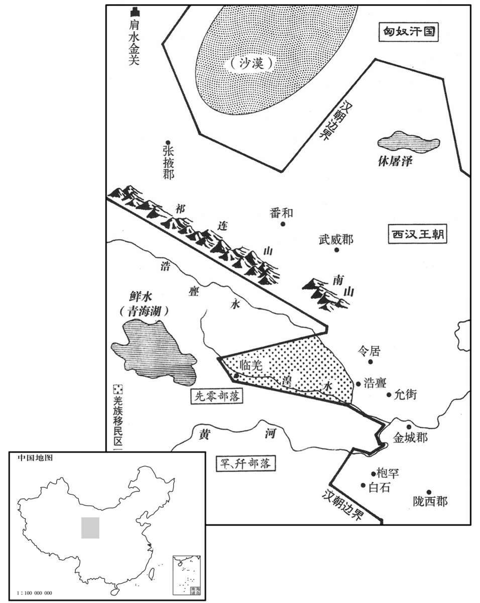

公元前62年资治通鉴：本年记事、原文与白话对照
按原书编年位置阅读；追叙和史论不等于本年发生的事件。白话采用所据译本，缺译不以生成译文补齐。
卷25 · 本年记事
公元前62年 · 汉中宗孝宣皇帝元康四年
元康四年〔（己未、前六二）〕
本年事件索引（现代整理）

本年形势与背景参考图
春，正月，诏：“年八十以上，非诬告、杀伤人，他皆勿坐。”〔师古曰：诬告人及杀伤人，皆如旧法；其余则不论。〕
春季，正月，汉宣帝颁布诏书说：“年纪在八十以上的人，除犯有诬告、杀人、伤人之罪以外，其他罪一概免予论处。”
右扶风尹翁归卒，家无余财。秋，八月，诏曰：“翁归廉平乡正，〔乡，读曰向。〕治民异等。〔治，直之翻。〕其赐翁归子黄金百斤，以奉祭祀。”
右扶风尹翁归去世，家无余财。秋季，八月，汉宣帝下诏说：“尹翁归廉洁公正，治理百姓成绩优异，赐给尹翁归之子黄金百斤，作为祭祀之用。”
上令有司求高祖功臣子孙失侯者，得槐里公乘周广汉等百三十六人，皆赐黄金二十斤，复其家，令奉祭祀，世世勿绝，〔公乘，爵第八。复，方目翻。考异曰：宣纪：“元康元年，五月，复高皇帝功臣绛侯周勃等百三十六人家子孙。四年，又赐功臣适后黄金人二十斤。”按功臣表，诏复家者皆云“元康四年”，其数非一，不容尽误；盖纪误耳。〕
汉宣帝命有关部门查访汉高祖功臣的子孙中失去侯爵的人，共查出槐里公乘周广汉等一百三十六人，一律赐予黄金二十斤，免除其家徭役赋税，命其负责祖先的祭祀事务，世世不绝。
丙寅，富平敬侯张安世薨。
丙寅（十一日），富平侯张安世去世。
初，扶阳节侯韦贤薨，〔恩泽侯表，扶阳侯食邑于沛郡萧县。谥法：好廉自克曰节。〕长子弘有罪系狱，〔弘为太常，坐宗庙事系狱。〕家人矫贤令，以次子大河都尉玄成为后。〔服虔曰：今东平郡也。本为济东国，国除，为大河郡。师古曰：矫，托也。〕玄成深知其非贤雅意，即阳为病狂，卧便利，妄笑语，昏乱。〔师古曰：便利，大小便，音毗连翻。〕既葬，当袭爵，以狂不应召。大鸿胪奏状，章下丞相、御史按验。〔下，遐稼翻。〕按事丞相史乃与玄成书〔师古曰：即按验玄成事者。〕曰：“古之辞让，必有文义可观，故能垂荣于后。今子独坏容貌，蒙耻辱为狂痴，光曜暗而不宣，〔坏，音怪。暗，读与暗同。〕微哉子之所托名也！〔李奇曰：名，声名也。〕仆素愚陋，过为丞相执事，〔师古曰：过，犹谬也。〕愿少闻风声；不然，恐子伤而仆为小人也。”玄成友人侍郎章〔侍郎名章，史逸其姓。〕亦上疏言：“圣王贵以礼让为国，宜优养玄成，勿枉其志，〔师古曰：枉，屈也。〕使得自安衡门之下。”〔师古曰：衡门，谓横一木于门上，贫者之所居也。〕而丞相、御史遂以玄成实不病，劾奏之，〔劾，户概翻；下同。〕有诏勿劾，引拜；玄成不得已，受爵。帝高其节，以玄成为河南太守。
5]当初，扶阳节侯韦贤去世后，韦贤的长子韦弘因罪被逮捕下狱，韦家假托韦贤生前有令，以二儿子大河都尉韦玄成作为韦贤的继承人。韦玄成深知这并不是父亲的本意，便假装疯癫，躺在粪尿之中，胡言乱语，又笑又闹。安葬了韦贤之后，韦玄成应当继承扶阳侯爵位，但他却继续假装疯癫，不肯应召袭爵。大鸿胪向汉宣帝奏报此事，汉宣帝命丞相、御史核验是否属实。查办此事的丞相史便写信给韦玄成说：“古人辞让爵位的，都著有文章，说明自己的仁义行为，因此才能留芳后世。如今你却只是毁坏容貌，忍受耻辱而伪装疯癫，有如微细的光亮，照不了多远，你所能得到的名声是很小的。我一向愚昧浅陋，勉强为丞相办事，希望能稍微听到外界对你的议论。不然的话，恐怕你会因清高而受到伤害，我成了检举你的小人。”韦玄成的朋友、一个叫做章的侍郎也上书说：“圣明的君主为国尊崇礼让行为，应当优待韦玄成，不必违背他的意志，使他得以自安于清贫的生活。”而丞相、御史则以韦玄成本没有疯癫之病为理由弹劾他。汉宣帝下诏命不必弹劾，命领他来承袭爵位。韦玄成迫不得已，只得奉命袭爵。汉宣帝欣赏他的志节，任命他为河南太守。
车师王乌贵之走乌孙也，乌孙留不遣。汉遣使责乌孙，乌孙送乌贵诣阙。
车师王乌贵逃到乌孙后，乌孙将其收留。汉朝派使臣责问乌孙，乌孙将乌贵送往长安。
初，武帝开河西四郡，隔绝羌与匈奴相通之路，斥逐诸羌，不使居湟中地。〔河西武威、张掖、酒泉、敦煌四郡，本匈奴昆邪、休屠王地，武帝开之，置郡县，羌与匈奴隔远，不复得通。湟中，湟水左右地也，其地肥美，故斥逐诸羌，不使居之。水经注：金城郡临羌县西北至塞外，有西王母石室、仙海盐池；北则湟水所出，东流迳湟中城北，故小月氏之地也；又东迳临羌、破羌、允街、枝阳、金城而合于大河。〕及帝即位，光禄大夫义渠安国使行诸羌；〔战国时，西戎有义渠君，为秦所灭；子孙以国为姓。〕先零豪言：“愿时渡湟水北，逐民所不田处畜牧。”〔师古曰：湟水出金城临羌塞外，东入河。湟水之北是汉地。仲冯曰：湟北非谓汉地也。羌意欲稍北迁，与匈奴合而为寇。安国不知其情，故受其词，详下文可见。余谓羌依南山，渡湟水而北，固欲与匈奴合，而湟北则汉地，所以隔绝羌与匈奴通之路正在此。零，音怜。〕安国以闻。后将军赵充国劾安国奉使不敬。〔劾，户概翻。〕是后羌人旁缘前言，抵冒渡湟水，〔师古曰：旁，依心。抵冒，犯突而前也。旁，音步浪翻。冒，音莫北翻。〕郡县不能禁。
当初，汉武帝开辟河西四郡，隔断了羌人与匈奴联系的通道，并驱逐羌人各部，不让他们居住在湟中地区。及至汉宣帝即位，派光禄大夫义渠安国巡查羌人各部。羌人先零部落首领对义渠安国说：“我们希望能时常北渡湟水，到没有耕地的地方放牧。”义渠安国表示同意，并奏闻朝廷。后将军赵充国弹劾义渠安国“奉使不敬”，擅作主张。此后，羌人以汉使曾经许诺为借口崐，强行渡过湟水，当地郡县无力禁止。
既而先零与诸羌种豪二百余人解仇、交质、盟诅，〔师古曰：羌人无大君长，而诸种豪递相杀伐，故每有仇雠，往来相报。今解仇交质者，自相亲结，欲入汉为寇也。零，音怜。种，章勇翻。诅，庄助翻。〕上闻之，以问赵充国，对曰：“羌人所以易制者，〔易，以豉翻。〕以其种自有豪，数相攻击，势不壹也。〔数，所角翻；下同。〕往三十余岁西羌反时，亦先解仇合约攻令居，与汉相距，五六年乃定。〔武帝元鼎五年，西羌反，攻故安枹罕，次年即平，至是五十一年。师古曰：合约，共为要契也。令，音铃。〕匈奴数诱羌人，欲与之共击张掖、酒泉地，使羌居之。〔数，所角翻。诱，音酉。〕间者匈奴困于西方，〔谓本始三年为乌孙所破。〕疑其更遣使至羌中与相结。臣恐羌变未止此，且复结联他种，〔复，扶又翻。〕宜及未然为之备。”〔师古曰：未然者，其计未成。〕后月余，羌侯狼何果遣使至匈奴藉兵，〔师古曰：藉，借也。据充国传，狼何，小月氏种。〕欲击鄯善、炖煌以绝汉道。〔鄯，上扇翻。炖，音屯。〕充国以为“狼何势不能独造此计，疑匈奴使已至羌中，先零、罕、开乃解仇作约。〔苏林曰：罕、开在金城南。师古曰：罕、开，羌之别种也。此下言“遣开豪雕库宣天子至德，罕、开之属皆闻知明诏”，其下又云：“河南大开、小开”，则罕羌、开羌姓族殊矣。开，音口坚翻。而地理志，天水有罕开县，盖以此二种羌来降，处之此地，因以名县也。而今之羌有姓有罕开者，总是罕、开之类，合而言之，因为姓耳。变“开”为“井”，字之讹也。零，音怜。罕，即罕字。〕到秋马肥，变必起矣。宜遣使者行边兵，〔行，下孟翻；下同。〕豫为备敕，视诸羌毋令解仇，〔师古曰：视，读曰示；示，语之也。〕以发觉其谋。”于是两府复白遣义渠安国行视诸羌，〔两府，丞相、御史府也。此视，观也。〕分别善恶。〔别，彼列翻。〕
不久，先零部落与其他各羌族部首领二百余人解除相互间怨仇，彼此交换人质，共同盟誓。汉宣帝听说后，就此询问赵充国的看法。赵充国说：“羌人之所以容易控制，是因为其部落各自有首领，彼此间多次互相攻击，势力不统一。三十多年前，西羌背叛朝廷时，也是先解除自身内部的仇怨，然后合力进攻令居，与汉朝对抗，历时五六年才平定。匈奴多次引诱羌人，企图与羌人联合进攻张掖、酒泉地区，让羌人在那里居住。近年来，匈奴西部地区受到困扰，我怀疑他们又派使者到羌中与羌人部落联合。我恐怕西羌事变并不局限于此，他们还会和其他部族再次联合，我们应提前做好准备。”一个多月以后，羌人首领、羌侯狼何果然派使者到匈奴去借兵，企图进攻鄯善、敦煌，隔断汉朝通往西域的道路。赵充国认为：“狼何不可能独自订出此计，我怀疑匈奴使者已经到达羌中，先零、、等羌人部落才解除仇恨，订立盟约。一到秋季马匹肥壮之时，必有事变发生。应派出使臣，巡视边塞防御情况，预先备好敕令，设法阻止羌人各部落解除仇恨，瓦解他们的联盟，以揭露他们的阴谋。”于是丞相、御史再次禀明汉宣帝，派义渠安国巡视羌人各部，区分各部的善恶。
是时，比年丰稔，谷石五钱。〔比，毗至翻。〕
这时，因农业连年丰收，一石谷物的价格是五钱。